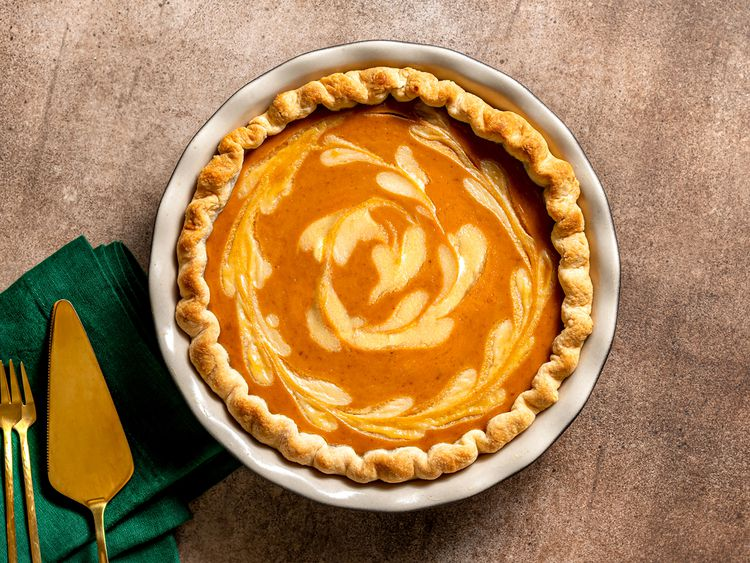

Pumpkin Pie
Description
Pumpkin pie is an all-time holiday dessert classic. The contrast of spiced pumpkin against cold, tangy cream cheese is a gift I look forward to every fall.
This recipe swaps out cream cheese for swirl of luscious, smooth, mascarpone.
Ingredients
- 1 (9 inch) unbaked pie crust
- 1 (15 ounce) can pumpkin puree
- 1 (14 ounce) can sweetened condensed milk
- 2 large eggs
- 1 teaspoon pumpkin pie spice
Steps
- Preheat the oven to 425 degrees F (220 degrees C).
- Fit pie crust into a 9-inch pie dish and place it on a baking sheet.
- Combine pumpkin puree, condensed milk, eggs, and pumpkin pie spice in a large bowl. Mix until combined and set aside.
- Make the cheesecake swirl: In a medium, microwave-safe bowl stir together mascarpone, milk, maple syrup, and flour.
- Microwave on high power until the cheese is completely melted, 20 to 30 seconds. Stir the mixture until completely smooth. (This will make swirling easier.)
- Add about two-thirds of the cheese mixture into the pumpkin filling and stir to combine.
- Bake in the preheated oven for 15 minutes.
- Remove from the oven, set on a wire rack, and cool completely before serving.